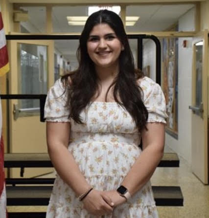

Mary Grlic
meg323@rutgers.edu | Linkedin
About Me
I am a second year undergraduate student at Rutgers University New Brunswick School of Engineering and Honors College. I am pursuing a Bachelors degree in Computer Engineering with a minor in Computer Science. I am looking to further concentrate in Intelligence and Cybersecurity.
I am always curious and willing to put my creativity forward. I take great pride in my work and respobsilities, always completely projects in a timely, organized manner. My dedication and love for engineering is what pushes me to want to succeed and go the extra step further in my career. I have experience working in the Information Technology field at Computero Inc. In college, I have taken courses where I have developed skills like Java, Matlab, and AutoDesk.
Rutgers University
- Alpha Omega Epsilon Sorority, Co-Philanthropy Chair
- Rutgers Engineering Honors Council, Outreach Chair
- Society of Women Engineers, Member since 2022
- Fall 2022, Spring 2023: Dean's List Recipient for GPA of 3.2 or better
STEM for Women
As a woman in engineering, I firmly believe that involving younger girls in science, tech, engineering, and mathematics is such an important mission. When I was a girl growing up, I always had a passion for math, which evolved into my love for computers, coding, and engineering. I had a great support system from my family and high school teachers, and was fortunate to have resources to foster my learning. I would love to share this same encouragement and education to younger girls in STEM, so I started an initiative called STEM for Women.
STEM for Women is a social media-based initiative, run through Instagram and a blog, meant to educate and inspire young girls and non-binary students in STEM. Gaining almost 500 followers, the STEM for Women Instagram account includes informative posts about topics in engineering, computer science, mathematics, physics, and more. I run this account with STEM news, education, and encouragement in mind.
My love for this project pushed me to get involved with other organizations dedicated to the same cause on the Rutgers University campus. I am a sister of the Alpha Omega Epsilon STEM Sorority, where we value leadership, friendship, and professionalism. I am also a member of SWE, the Society of Women Engineers. Beyond that, as an Honors College student, I am a member of the Rutgers Engineering Honors Council, a small group of honors engineers whose goal is to bring together and educate the honors community.
[Instagram]